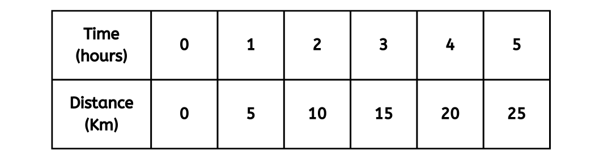
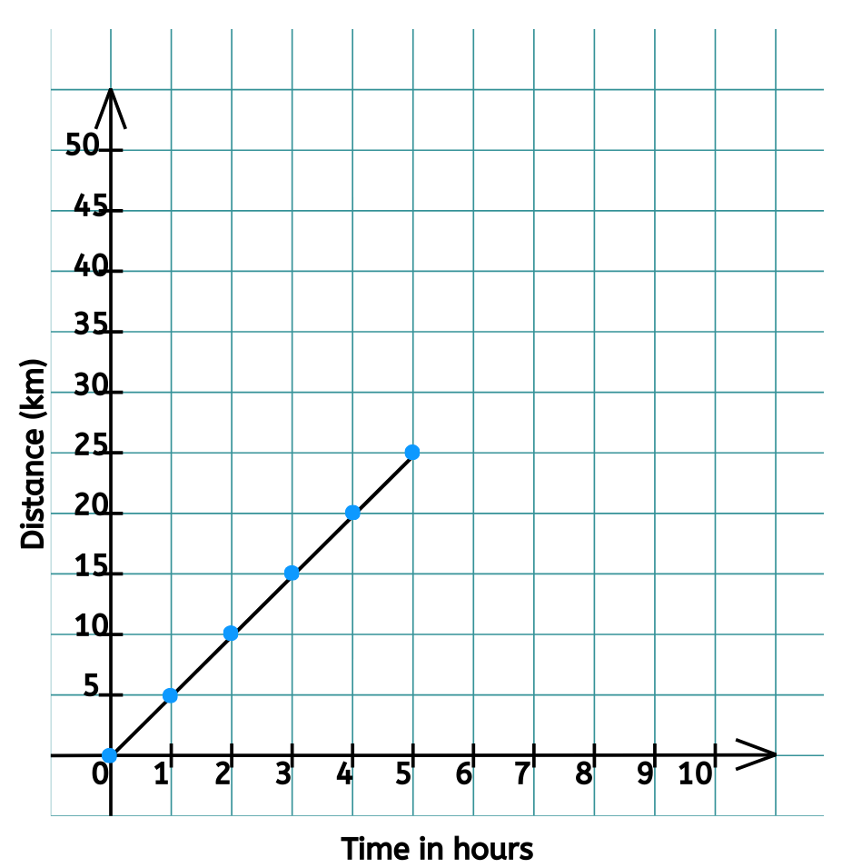
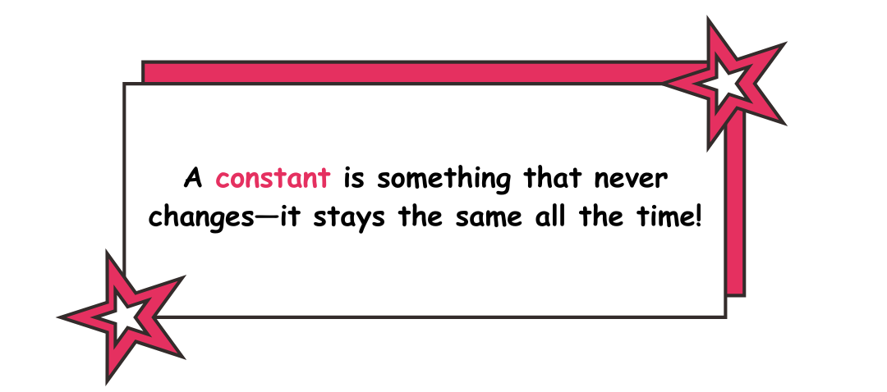
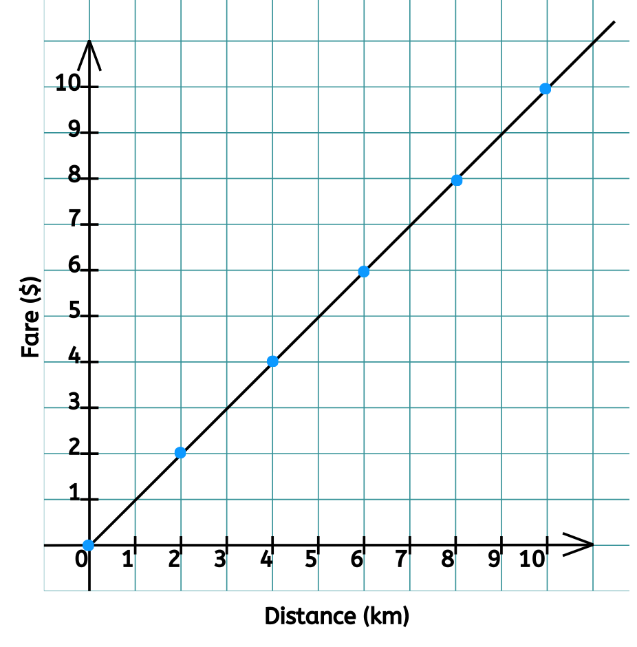
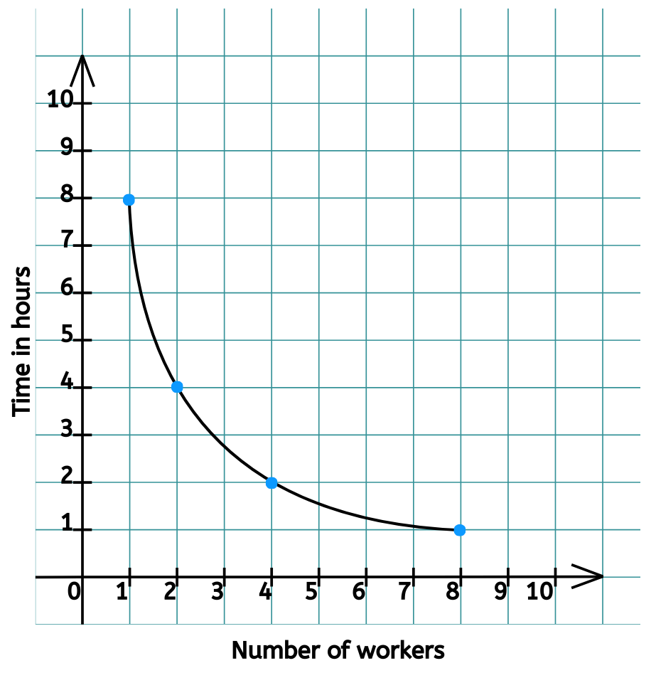

Linear Graph
A linear graph is a graphical representation of the relationship between two or more quantities using a straight line. The word ‘linear’ means straight, and this type of graph shows a constant rate of change between variables. There are no curves, only a straight line to represent the data.
A linear graph helps in visually analyzing relationships in data, such as how distance changes over time or how expenses increase with income.
Example:
Let’s consider an example where we track the distance traveled by an object over time.

Observe that the relationship between Distance and Time in the above table is given by:
Distance = 5 × Time (D = 5× T)
When we plot these values on a graph:
- X-axis represents the time.
-
Y-axis represents the distance.
 - When we connect the plotted points, we obtain a straight line, confirming that this is a linear relationship.
How to Recognize a Linear Graph
- If the plotted points form a straight line (not curved), then the graph is linear.
- If y changes at a constant rate with x, i.e., when x increases, y also increases or decreases by the same amount every time, then the relationship is linear, and hence the graph is linear.
- If the equation that represents the relationship between x and y is of the form y = ax + b, where a and b are real numbers, then it is a linear graph.
Directly Proportional Graphs
Two variables, x and y, are directly proportional if they increase or decrease together at the same rate. That is, when one quantity increases, the other also increases at a constant rate. This means that their ratio remains constant.
Mathematically, we write y ∝ x or =k (constant).

How to Recognize a Directly Proportional Graph
- The graph is always a straight line.
- The line passes through the origin (0,0).
- If x increases, y also increases at a constant rate.
- If x decreases, y also decreases at a constant rate.
Example:
Suppose a taxi service charges $2 per kilometer. The total fare y is directly proportional to the number of kilometers traveled x.
If we plot this on a graph:
- When x = 1, y = 2
- When x = 2, y = 4
- When x = 3, y = 6, and so on.
The graph will be a straight line passing through (0,0).

Inversely Proportional Graphs
Two variables, x and y, are inversely proportional if one increases while the other decreases in a constant manner. Mathematically, we write
y ∝ or xy=k, where k is a constant.
How to Recognize an Inversely Proportional graph
- The graph is a curved shape (not a straight line).
- The curve never touches the x-axis or y-axis (it gets closer but never intersects).
- If x increases, y decreases.
- If x decreases, y increases.
Example:
Suppose a group of workers needs to paint a wall. The more workers there are (x), the less time (y) it takes to complete the job.
If we plot this on a graph:
- When x = 1, y = 8
- When x = 2, y = 4
- When x = 4, y = 2
- When x = 8, y = 1.
 - The graph will be a curved line that moves downwards as x increases.